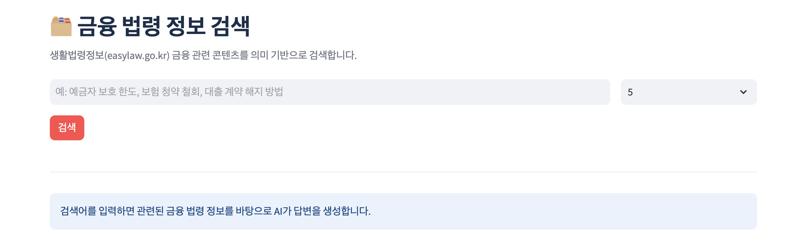
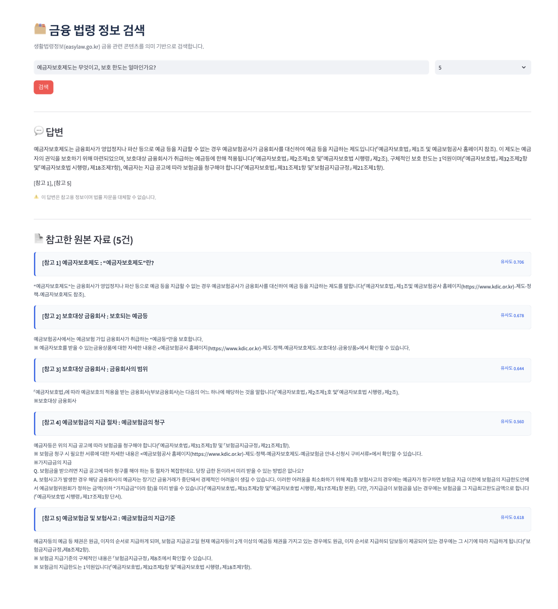

법제처 생활법령정보의 금융 콘텐츠로 RAG 시스템을 만들고, 두 가지 방법으로 검증했습니다. 골든셋 56문항으로 검색과 답변 거부를 정량 측정해 설계를 고르고, 실제 생성 답변 10건을 근거 청크·공식 답변과 대조해 지표에 드러나지 않는 실패를 찾았습니다.
모두 같은 골든셋·같은 라벨에서 설계만 바꿔 비교한 값입니다. 파라미터를 고른 문항으로 측정한 개발 벤치마크이며, 일반화 성능이 아닙니다.
수집부터 서빙까지 직접 구성했습니다. 오프라인 단계는 독립 스크립트로 파일만 주고받고, 설정값은 src/config.py 한 곳에서 정의합니다.
score는 코사인으로 남깁니다. 게이트 임계값이 코사인 척도에서 동작해야 하기 때문입니다.

| 트랙 | 대상 | 방법 |
|---|---|---|
| 정량 | 골든셋 56문항 법령 용어 10 · 구어체 10 · 조문 번호 8 · 무정답 28(어휘 함정 9 포함) |
정답 청크 ID를 라벨로 두고 eval/run_eval.py로 측정. 외부 LLM 호출 없이 결정론적으로 재현할 수 있어 설계를 바꿀 때마다 같은 조건으로 재측정했습니다. 라벨은 검색 결과를 보기 전에 확정했습니다. |
| 정성 | 실제 앱 답변 10건 (2026-09-11) 그중 3건은 생활법령정보 공식 답변과 1:1 대조 |
답변의 금액·기간·조문을 근거 청크 원문과 대조하고, 실패를 검색 · 순위 · 생성 · 데이터 중 어느 단계에서 났는지 분리했습니다. |
| 지표 | 정의 (정답 청크 ID = relevance 1, 나머지 0) |
|---|---|
| Hit Rate@5 · MRR@5 | 정답을 상위 5건에 하나라도 넣은 질문 비율 · 첫 정답 순위의 역수 평균 |
| Context Recall@5 | 참조 청크 ID 중 상위 5건에서 검색된 비율 |
| Context Precision@5 · nDCG@5 | 순위 가중 정밀도(정답이 나온 위치의 Precision@i 평균)를 ID 라벨로 계산 · 이진 gain으로 nDCG 계산 |
| post-filter Recall · 답변 커버리지 | 정답 청크 중 게이트를 통과해 LLM에 전달된 비율 · 정답 있는 질문 중 답변이 생성된 비율 |
| 무정답 거부율 | 답이 없는 질문 중 답변을 보류한 비율 (무정답을 음성 클래스로 보면 specificity) |
| 지표 | BM25 단독 | 밀집 | 하이브리드 (채택) |
|---|---|---|---|
| Hit Rate@5 | 0.821 | 0.929 | 1.000 |
| Context Recall@5 | 0.739 | 0.889 | 0.961 |
| MRR@5 | 0.659 | 0.827 | 0.848 |
| nDCG@5 | 0.636 | 0.818 | 0.847 |
| Context Precision@5 | 0.636 | 0.810 | 0.823 |
조문 번호 질의 「예금자보호법」 제39조의2에서 밀집 검색은 정답을 16위, BM25는 1위로 찾았습니다. 그렇다고 RRF 관례값(k=60, 동등 가중)으로 섞으면 Recall@5가 0.889 → 0.812로 떨어져, k=10과 조문 번호 질의에만 어휘 가중치를 올리는 조건부 결합을 택했습니다. 악화된 문항은 0개, 페어드 부트스트랩 95% CI는 [+0.000, +0.179]입니다.
| 지표 | 단일 0.55 | 단일 0.50 | 2단 0.52 / 0.44 (채택) |
|---|---|---|---|
| 답변 커버리지 | 0.821 | 1.000 | 0.929 |
| post-filter Recall | 0.746 | 0.913 | 0.889 |
| 구어체 post-filter Recall | 0.550 | 0.917 | 0.850 |
| 무정답 거부율 (전체 28) | 0.571 | 0.393 | 0.536 |
| 무정답 거부율 (일반 19) | 0.789 | 0.579 | 0.737 |
| 무정답 거부율 (어휘 함정 9) | 0.111 | 0.000 | 0.111 |
질문 단위 최고 코사인으로 보면 정답 있는 질문 28개 중 17개가 무정답 질문의 점수 범위(0.400~0.722)와 겹쳐, 최적 단일 임계값에서도 분리 정확도가 0.839에 그칩니다. 임계값을 0.50으로 낮추면 커버리지는 1.000이 되지만 무관한 근거로 답하는 질문이 5건 늘어납니다. 2단 게이트는 커버리지 개선 대부분을 얻으면서 그중 4건을 계속 막습니다.
| 시도 | 결과 | 근거 |
|---|---|---|
| 금융 도메인 MLM 모델 (kf-deberta-base) | 기각 | Recall@5 0.475. 문장 검색용으로 학습된 임베딩 모델이 아니었습니다 |
| 표 행 단위 분할 | 철회 | 정답 표가 여러 청크로 나뉘어 지표 하락. 8192토큰 모델로 바꾼 뒤 분할할 이유가 사라졌습니다 |
| 균일 하이브리드 (RRF k=60) | 기각 | Context Recall@5 0.889 → 0.812 |
| 점수 정규화 (z-score 등) | 기각 | 분리 정확도 0.696~0.804로 원래 코사인 0.839보다 낮음 |
채택한 변경도 모두 같은 조건의 전후 비교로 판단했습니다 — heading 단위 레코드 분리(MRR 0.642 → 0.683), 임베딩 모델 교체(128토큰 상한으로 청크 46%가 잘리던 문제 해소, Recall@5 0.787 → 0.887), 하이브리드 검색, 2단 게이트.
현재 구성으로 앱을 실행한 결과입니다. 유사도는 화면의 상위 5건 순서대로이며, 현재 코드로 다시 실행해도 같은 값이 나옵니다. 답변 전문은 각 행을 펼쳐 볼 수 있습니다.
0.676 최고점 · 0.538 근거로 전달(≥ 0.44) · 0.434 화면에만 표시(< 0.44)
| # | 질문 | 검색 · 게이트 | 판정 |
|---|---|---|---|
| 1 | 모르는 사람에게 잘못 송금했습니다. 송금한 금액을 돌려받을 수 있는 방법이 있을까요?
답변착오송금 반환지원제도를 통해 송금한 금액을 돌려받을 수 있습니다. 해당 제도는 자금이체 금융회사 등을 통해 착오 송금한 송금인의 신청이 있는 경우 예금보험공사가 대신 찾아주는 제도입니다. 구체적인 신청 방법은 예금보험공사 금융안심포털에서 확인할 수 있으며, 신청대상여부도 해당 포털에서 확인할 수 있습니다. 이 답변은 법률 자문이 아닌 정보 제공 목적입니다. [참고 1], [참고 2] |
0.6760.6470.6250.5380.558 |
정상구어체 질의를 제도명(착오송금 반환지원)으로 연결 |
| 2 | 금융상품에는 어떤 종류가 있어?
답변금융상품은 크게 예금성 상품, 대출성 상품, 투자성 상품, 보장성 상품으로 구분됩니다. 예금성 상품은 예금, 예탁금 등 금융기관이 금전을 받고 장래 이자와 함께 돌려주는 계약을 포함하며, 대출성 상품은 대출, 신용카드, 할부금융, 대부, 연계대출, 소액후불결제, 보험회사의 어음 할인·매출채권 매입·대출·지급보증 등 금전 또는 재산적 가치를 제공하고 장래 대가를 받기로 하는 계약을 포함합니다. 투자성 상품은 금융투자상품, 연계투자, 신탁계약, 투자일임계약, 자본시장법에 따른 투자성이 있는 금융상품, 단기금융회사의 발행어음, 종합투자계좌 등을 포함하며, 보장성 상품은 보험상품, 공제, 보험상품과 유사한 금융상품을 포함합니다. 이 답변은 법률 자문이 아닌 정보 제공 목적입니다. [참고 1], [참고 2], [참고 3] |
0.7880.7630.7620.6590.621 |
정상4개 상품 유형을 빠짐없이 포함 |
| 3 | 예금자보호제도는 무엇이고, 보호 한도는 얼마인가요?
답변예금자보호제도는 금융회사가 영업정지나 파산 등으로 예금 등을 지급할 수 없는 경우 예금보험공사가 금융회사를 대신하여 예금 등을 지급하는 제도입니다(「예금자보호법」 제1조 및 예금보험공사 홈페이지 참조). 이 제도는 예금자의 권익을 보호하기 위해 마련되었으며, 보호대상 금융회사가 취급하는 예금등에 한해 적용됩니다(「예금자보호법」 제2조제1호 및 「예금자보호법 시행령」 제2조). 구체적인 보호 한도는 1억원이며(「예금자보호법」 제32조제2항 및 「예금자보호법 시행령」 제18조제7항), 예금자는 지급 공고에 따라 보험금을 청구해야 합니다(「예금자보호법」 제31조제1항 및 「보험금지급규정」 제21조제1항). [참고 1], [참고 5] |
0.7060.6780.6440.5600.618 |
정상한도 1억원·제32조제2항·시행령 제18조제7항이 근거 청크([참고 5]) 원문과 일치. 본문 면책 문장 없음 |
| 4 | 은행이 망하면 제 예금은 어떻게 되나요?
답변은행이 영업정지나 파산 등으로 예금 등을 지급할 수 없는 경우, 예금자보호제도에 따라 예금보험공사에서 해당 은행을 대신하여 예금 등을 지급합니다. 예금보험금 지급 절차는 보험사고 발생 시 공고가 이루어지며, 예금자 등은 예금등 채권을 가진 자로서 원금·이자·이익 등의 순서로 지급받을 수 있습니다. 다만, 부실관련자이거나 특수관계자에 해당하는 경우, 또는 담보제공채권이 있는 경우에는 보험금 지급이 보류되거나 한도가 적용될 수 있습니다. [참고 1], [참고 2], [참고 3], [참고 4], [참고 5] |
0.5700.5640.5340.4990.504 |
정상최고점 0.570으로 답변 기준을 넘음. 본문 면책 문장 없음 |
| 5 | 아는 선배의 대출권유를 받고 계약을 하긴 했는데, 도저히 제가 감당할 여력이 안 되는 것 같습니다. 대출계약을 철회할 수 있나요?
답변 (표시 개수 5)대출계약을 철회할 수 있는지 여부는 「금융소비자 보호에 관한 법률」에 따른 청약철회권 적용 대상에 해당하는지에 따라 결정됩니다. 해당 법률은 대출성 상품에 대해 일반금융소비자가 일정한 기간 내에 청약을 철회할 수 있도록 규정하고 있습니다. 다만, 철회 가능 여부는 구체적인 계약 조건 및 철회 기간 등 관련 규정에 따라 달라질 수 있습니다. [참고 1], [참고 3]답변 (표시 개수 10)대출계약을 철회할 수 있는지 여부는 「금융소비자 보호에 관한 법률」에 따른 청약철회권 적용 대상에 따라 결정됩니다. 대출성 상품은 청약철회권이 인정되는 금융상품 유형에 포함되며, 철회 가능 기간은 계약서류 제공일 또는 계약체결일 중 더 늦은 날로부터 14일 이내입니다. 철회 의사를 서면 또는 전자적 방법으로 표시하고, 이미 제공받은 금전·재화 등을 반환하면 효력이 발생합니다. [참고 10] |
1~50.5580.5530.5310.5280.538 6~100.5070.4900.5140.5220.504 |
순위 실패핵심인 "14일"이 빠짐. 기한이 적힌 표 청크가 유사도 0.504로 근거 기준은 넘지만 10위라 상위 5건에서 잘립니다. 표시 개수 10에서는 14일과 행사 방법이 들어가지만, 기산점은 근거와 다릅니다 — 원문은 "계약서류 제공일·계약체결일부터, 금전 지급이 더 늦으면 그 지급일부터"인데 답변은 "중 더 늦은 날로부터"로 요약하고 지급일 단서를 뺐습니다 |
| 6 | 제 이름이 아닌 가명으로 통장을 개설해도 되나요?
답변가명으로 통장을 개설하는 것은 「금융실명거래 및 비밀보장에 관한 법률」에 따라 원칙적으로 금지됩니다. 해당 법률은 금융거래를 실지명의(실명)로 하도록 규정하고 있으며, 가명 또는 타인의 실명을 사용하는 행위는 불법·탈법 목적의 금융거래에 해당할 수 있습니다. 다만, 실명확인의 예외 사유에 해당하는 경우에는 실명 확인이 생략될 수 있으나, 이는 특정 법적 요건을 충족하는 경우에 한정됩니다. [참고 1], [참고 2] |
0.5370.5210.4920.5130.479 |
생성 누락결론은 공식 답변과 일치. 인용한 [참고 1] 본문에 있는 "5년 이하의 징역 또는 5천만원 이하의 벌금"을 옮기지 않았습니다 |
| 7 | 얼마 전 어머니께서 괜한 말에 속아서 돈을 받고 다른 사람에게 체크카드를 빌려주었다고 합니다. 처벌받을 수 있나요?
답변어머니께서 다른 사람에게 체크카드를 빌려준 행위는 「전자금융거래법」 제6조제3항에 따라 접근매체의 양도 등 금지 행위를 위반한 것으로 볼 수 있습니다. 해당 법률은 접근매체를 사용 및 관리함에 있어 다른 법률에 특별한 규정이 없는 한 양도 등 금지 행위를 하지 못하도록 규정하고 있습니다. 이를 위반하면 5년 이하의 징역 또는 3천만원 이하의 벌금에 처해질 수 있습니다. [참고 1], [참고 4] |
0.5010.4940.5400.5140.434 |
데이터 결함정답 청크가 1위이고 처벌 수위도 원문과 일치. 그러나 "돈을 받고"(대가 수수) 요건이 청크에 아예 없어 반영할 수 없었습니다(05). 0.434 청크는 근거에서 제외됐습니다 |
| 8 | 차를 사서 500만원을 12개월 할부로 갚으려고 해. 매달 얼마 내면 돼?
화면 메시지관련성이 높은 자료를 찾지 못해 AI 답변 생성을 건너뜁니다. 검색 결과만 표시합니다. |
0.4330.4270.4250.4180.424 |
정상 거부최고점 0.433 < 0.52로 LLM 호출 자체를 생략. 코퍼스에 없는 계산 요청에 답하지 않음 |
| 9 | 보험 청약을 취소하고 싶어요.
답변보험 청약을 취소하려면 「금융소비자 보호에 관한 법률」 제46조제1항에 따른 청약철회권을 행사할 수 있습니다. 청약철회권은 보장성 상품에 대해 일반금융소비자가 일정한 기간 내에 청약을 철회할 수 있는 권리를 의미합니다. 해당 기간은 보험증권을 받은 날부터 15일과 청약을 한 날부터 30일 중 먼저 도래하는 기간입니다. 구체적인 행사 방법은 서면(우편, 전자우편, 휴대전화 문자메시지 등)을 발송하여 철회의사를 표시하는 것입니다. 이 답변은 법률 자문이 아닌 정보 제공 목적입니다. [참고 2], [참고 3] |
0.6020.5900.5760.5590.531 |
정상15일·30일·제46조제1항이 근거 원문과 일치. #5에서 10위였던 같은 표 청크가 여기서는 3위 |
| 10 | 예금자보호로는 5천만원까지만 보장 받을 수 있어?
답변예금자보호는 일반적으로 1억원까지 보장되며, 이는 「예금자보호법」 및 관련 시행령에서 규정하고 있습니다. 다만, 특정 금융상품이나 공제계약의 경우 별도의 한도가 적용될 수 있으므로 구체적인 사항은 해당 금융회사의 안내나 관련 규정을 확인해야 합니다. 보호대상 금융회사는 예금보험공사에서 정한 범위에 포함되며, 자세한 내용은 예금보험공사 홈페이지에서 확인할 수 있습니다. 이 답변은 법률 자문이 아닌 정보 제공 목적입니다. [참고 1], [참고 2], [참고 4] |
0.6610.6150.6010.6520.602 |
정상질문의 잘못된 전제(5천만원)를 근거의 1억원으로 바로잡음 |
| 유형 | 근거 | 검색 지표로 보이나 | 다음 조치 |
|---|---|---|---|
| 순위 | #5 — 기한이 적힌 표 청크가 유사도 0.504로 근거 기준(0.44)은 넘지만 하이브리드 순위 10위. 골든셋에서도 Recall@5 손실은 col-02(이 문항)와 law-10 두 문항에서만 발생합니다 | Recall@5에 반영 | 교차 인코더 리랭커. 게이트 조정으로는 풀리지 않습니다 |
| 생성 누락 | #6 — 인용한 근거에 있는 제재 수치를 답변이 옮기지 않음 | 안 보임 | 근거 대비 답변 완전성 측정, 수치 대조 검증 |
| 데이터 결함 | #7 — 정답 청크가 "다음의 행위를 해서는 안 됩니다"에서 끝나고 금지 행위 5개 항목(대가를 받는 대여 포함)이 코퍼스에 없음. 같은 패턴이 101청크 중 20개에서 발견 | 안 보임 (정답 청크는 1위) | 추출 단계에서 HTML 목록 요소 보존 |
| 어휘 함정 | 코퍼스 어휘를 쓰지만 답이 없는 질문(예: 외화예금도 예금자보호 대상인가요?)은 9문항 중 1건만 거부. 해외 착오송금 질문의 최고 유사도는 0.722로 대부분의 실제 정답보다 높음 | 거부율에 반영 | 리랭커 또는 생성 단계 근거 검증. 코사인 점수로는 구분 불가 |
| 항목 | 현재 상태 | 다음 작업 |
|---|---|---|
| 생성 품질 | Faithfulness · Answer Relevancy를 정량 측정하지 않았습니다. 시스템 프롬프트가 앱 스크립트 안에 있어 평가 코드에서 재사용할 수 없습니다 | 생성 로직을 모듈로 분리 → 소수 표본에서 사람 판정과 LLM 판정의 일치율을 확인한 뒤 전체 적용 |
| 수치 정확성 | 계산 금지 규칙은 프롬프트에만 있고, 답변 수치를 근거와 대조하는 검증은 없습니다 | 금액·기간·비율 정규식 대조와 [참고 N] 인용 무결성 검사 (LLM 없이 결정론적) |
| 평가 규모 | 정답 문항 28개로 튜닝과 평가를 함께 해 선택 편향이 남아 있습니다 | 골든셋 확장, 튜닝용과 최종 평가용 분리 |
| 검색의 필요성 | 코퍼스 전체(27,223자)가 LLM 컨텍스트에 들어가는 규모입니다 | 생성 품질 측정 후 전체 컨텍스트 입력과 검색 기반 입력을 비교 |
| 시나리오 | 모호한 질문의 되묻기, 존재하지 않는 법령 전제, 프롬프트 우회 시도는 아직 테스트하지 않았습니다 | 시나리오별 기대 동작 정의 후 골든셋에 추가 |